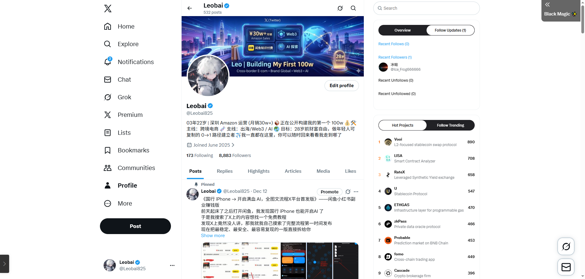
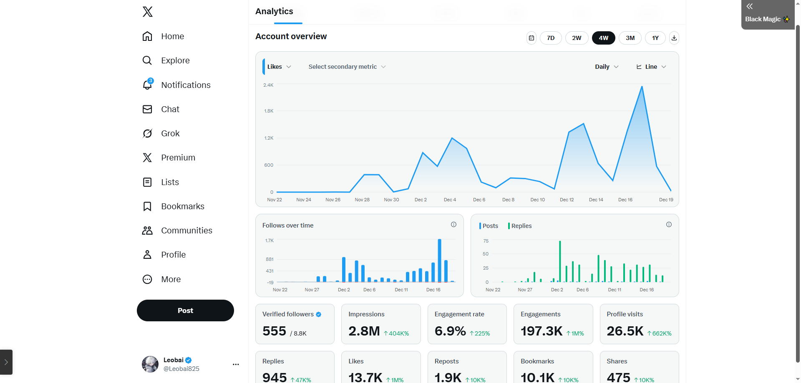
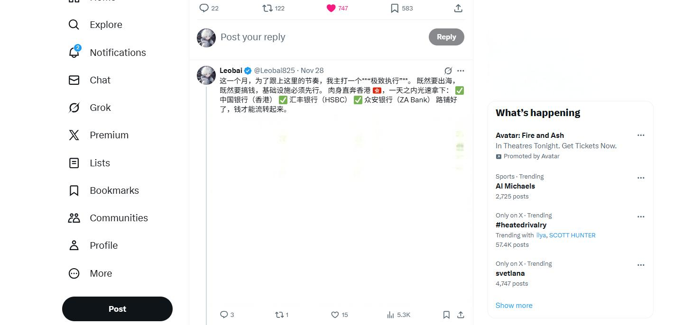
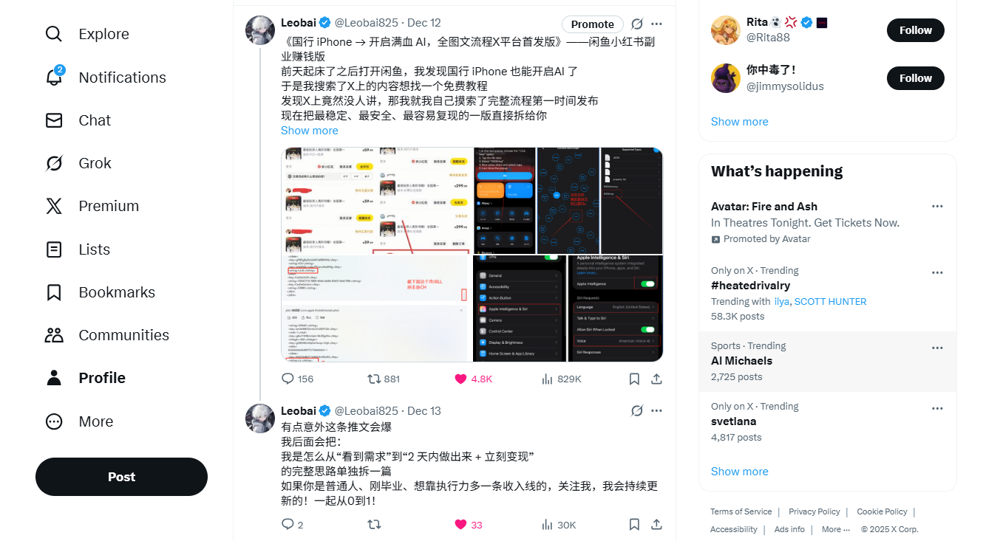
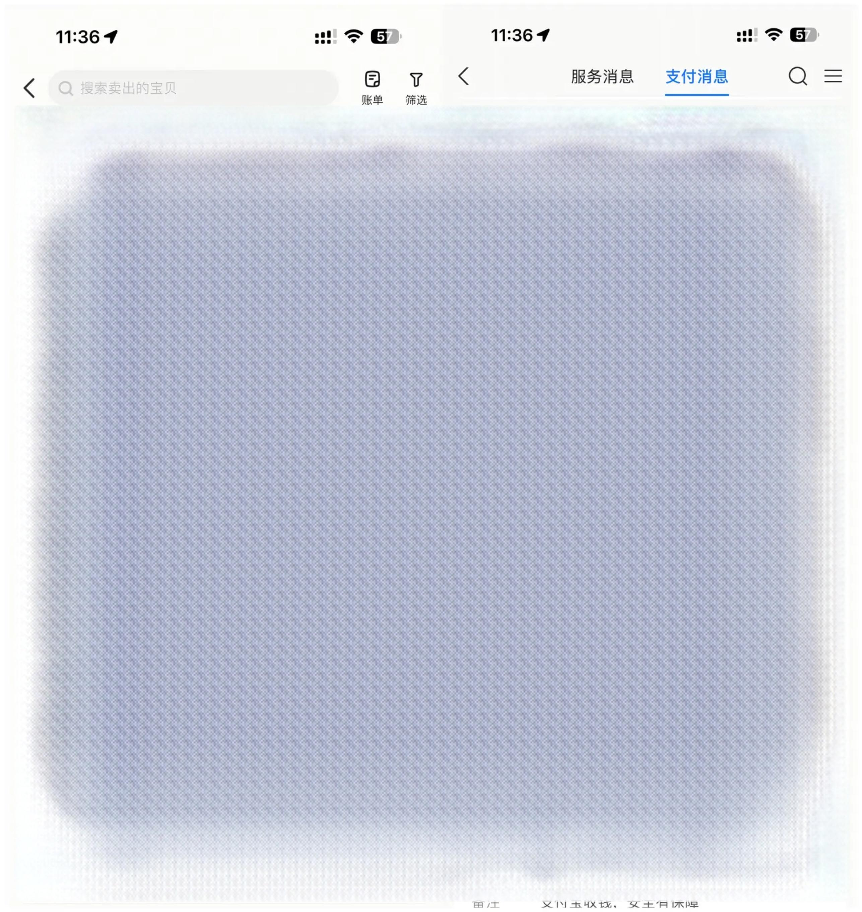

项目背景： 为验证“AI + 内容系统”在海外社媒的冷启动效率，我开始了为期 25 天的流量实验。
项目成果： 在无投流、无矩阵的情况下，通过精准选题与极致执行，实现从 0 到 10000+ 粉丝的自然增长，总曝光超 350W+。


难点： 海外社媒运营的资金流转与合规性。
行动： 执行“闪电战”策略。在 24 小时内肉身奔赴香港，完成中银、汇丰、众安三家银行的开户与资金链路打通。
价值： 这种“极速执行”本身成为了一项强有力的内容素材，为账号带来了第一波高价值信任流量。

洞察： 泛泛的“人生感悟”在 X 上极其廉价，稀缺的是“可复刻的实操路径”。
策略： 聚焦 "Build in Public" (公开构建)。公开 资金变动、AI 实操复刻流程。
案例： 《国行苹果开启满血AI》单篇推文曝光量80W,总推文曝光量350W，验证了“技术降维 + 信息差”的内容模型。

目标： 验证流量的商业价值，拒绝虚假繁荣。
闭环： 流量 -> 信任 -> 淘宝数字产品 (攻略/教程)。
结果： 在账号启动初期即实现副业收入单日破 700 元。证明了该账号不仅有流量，更有高价值的用户信任资产。
